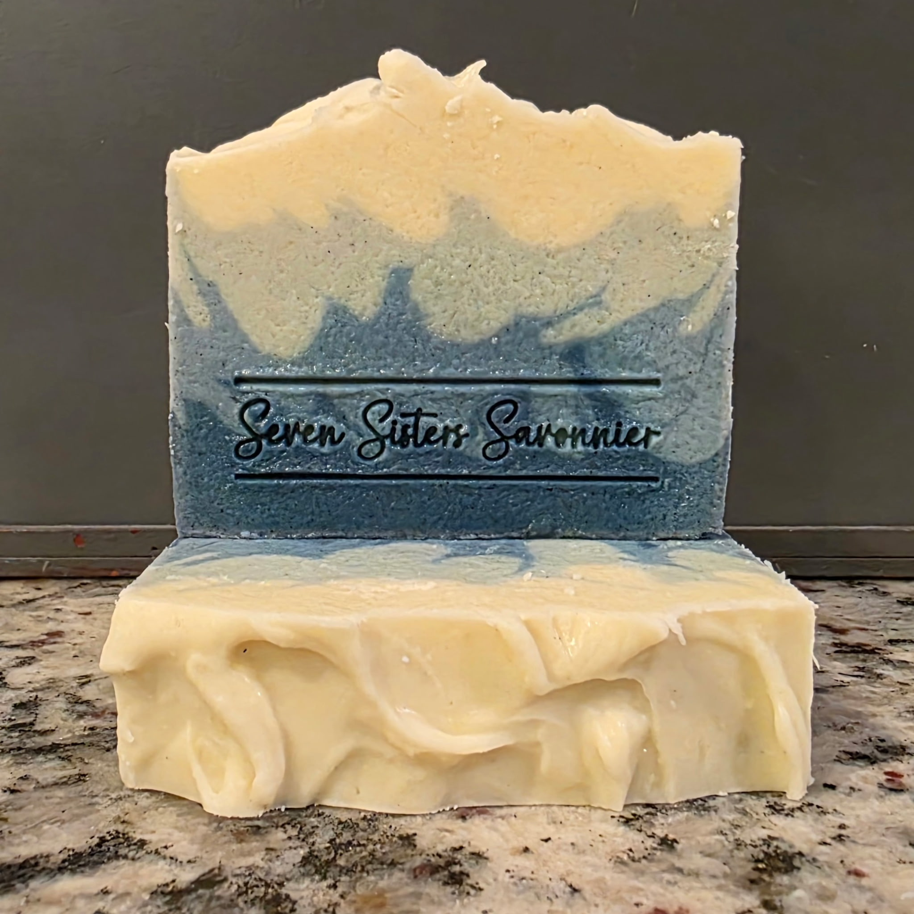
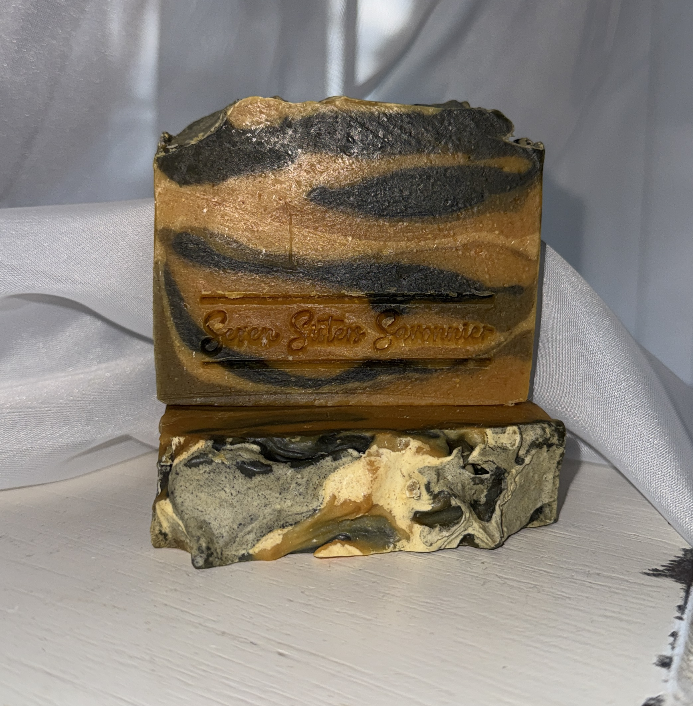
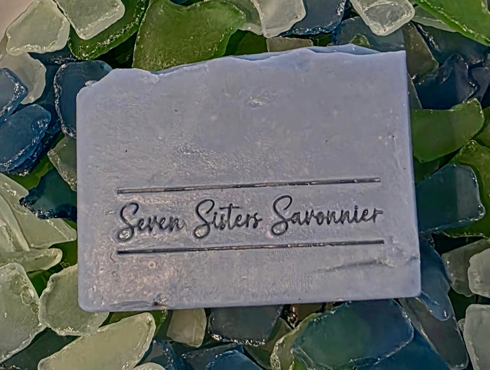

Inspired by Nature • Simply Luxurious
At Seven Sisters Savonnier, every bar is handcrafted in small batches using thoughtfully selected ingredients that have been valued for generations.

Four hand-poured layers of ocean blues rise into sculpted waves, capturing the beauty of the sea beneath a changing sky. Creamy goat milk creates a luxurious lather, while bergamot, lavender, peppermint, and eucalyptus evoke fresh coastal air. Skin-loving kaolin clay leaves the lather silky and gentle, while a touch of sea salt echoes the mineral-rich waters that inspired this bar.
Fresh • Coastal • Invigorating
$10.00

Creamy ivory, turmeric, activated charcoal, and kojic acid create a bold, one-of-a-kind bar. Bergamot, cedarwood, patchouli, and ylang ylang create a warm, earthy fragrance with bright citrus and soft floral notes. Goat milk and kaolin clay create a rich, silky lather.
Warm • Earthy • Wild
$10.00

Inspired by the translucent beauty of ocean-worn glass and the restorative calm of the sea. Handcrafted with nourishing oils and goat milk for a rich, velvety lather that gently cleanses. Bergamot, lavender, and rosemary essential oils create a sophisticated fragrance that is both uplifting and serene.
Fresh • Tranquil • Coastal
$10.00
Seven Sisters Savonnier
Email: sssavonnier@gmail.com
Phone: (228) 363-1543